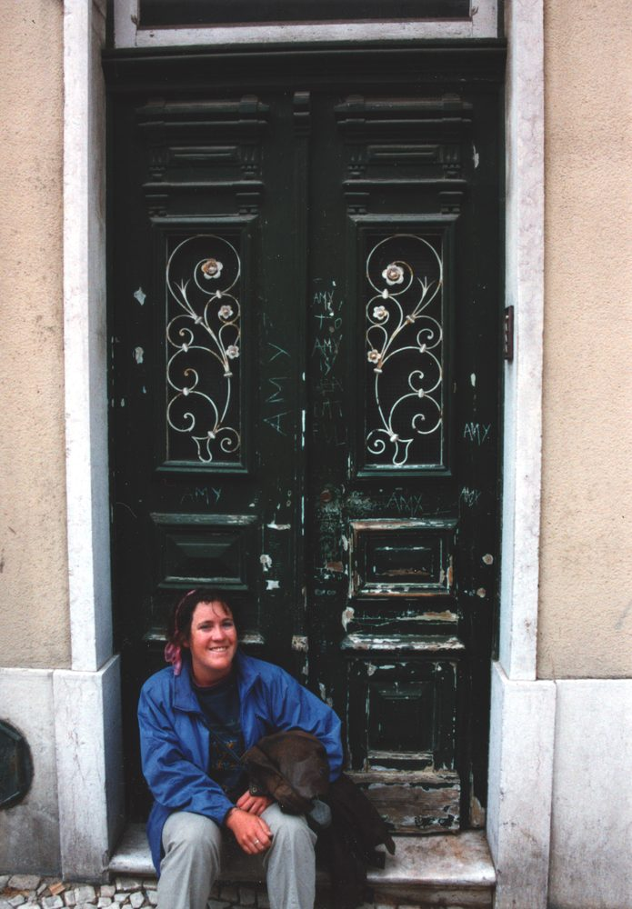

Eugène Atget
active 1890s–1920s
Shot deserted Paris streets, shop windows, and stairways with a large-format view camera — mostly as documentation, before "art photography" existed as a category. Man Ray and the Surrealists adopted his work late in his life.
The connectionDeserted ghost-town streets (Cripple Creek/Victor) — empty-street documentation predates the "ghost sign" genre by a century.
ICP artist archive →